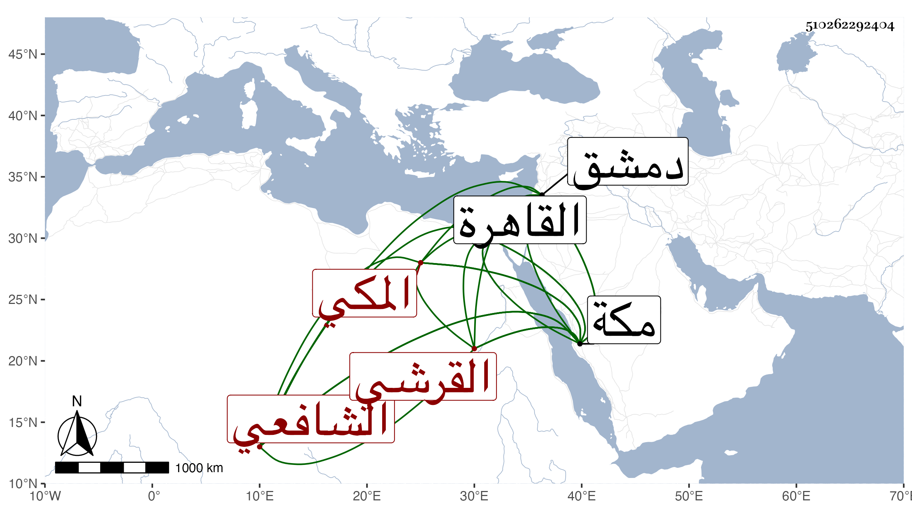

0902Sakhawi.DawLamic.ITO20230111-ara1.EIS1600.510262292404
Biography ID: 510262292404
27
علي بن محمد بن محمد بن حسين بن علي بن أحمد بن عطية بن ظهيرة نور الدين بن الكمال أبي البركات بن الجمال أبي السعود القرشي المكي الشافعي والد البرهان إبراهيم الماضي وأخوته ويعرف كسلفه بابن ظهيرة وأمه كمالية ابنة التقي الحراري . ولد سنة إحدى وثمانمائة بمكة ونشأ بها وأحضر علي ابن صديق جزء أبي الجهم وسمع من محمد بن عبد الله البهنسي والزين المراغي والجمال بن ظهيرة والولي العراقي وغيرهم كأبيه ، وأجاز له العراقي والهيثمي وعائشة ابنة ابن عبد الهادي وخلق وناب في القضاء بمكة عن أخيه أبي السعادات ودخل القاهرة مرارا ودمشق مرة وما علمته حدث بل أجاز لخلق وروى عنه ولده وكان سمحا كريما مفضالا وفي خلقه حدة . مات في جمادى الأولى سنة أربع وأربعين بمكة رحمه الله وإيانا .
